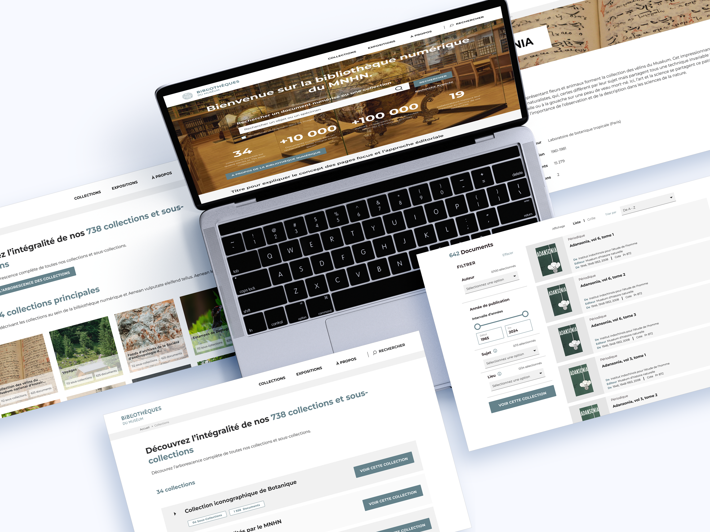

Le MNHN (Muséum national d’Histoire naturelle) est une institution scientifique et culturelle française dédiée à l’étude
et à la préservation de la biodiversité et du patrimoine naturel. Il possède d’importantes collections scientifiques,
historiques et documentaires.
Sa bibliothèque numérique vise à rendre accessibles en ligne des documents patrimoniaux numérisés,
tels que des ouvrages anciens, des manuscrits, des illustrations et des archives scientifiques.
C’est dans ce contexte que Scalian est intervenu pour développer l’application de la bibliothèque numérique,
afin de valoriser ces collections et de faciliter leur consultation par les chercheurs comme par le grand public.

Dès mon arrivée chez Scalian, j’ai eu l’opportunité de travailler sur ce projet d’envergure.
Ma mission consistait à adapter l’identité visuelle du MNHN à sa bibliothèque numérique.
Pour structurer le travail, je me suis appuyé sur les principes de l’Atomic Design,
en créant des composants réutilisables que j’ai ensuite intégrés aux différentes pages de l’application web.
Plusieurs ateliers avec le client ont permis d’affiner les propositions et d’aboutir à la maquette finale
présentée ci-dessous.